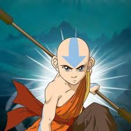
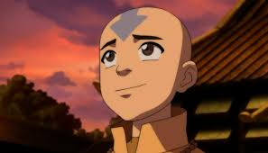
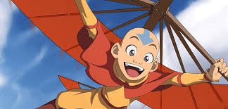
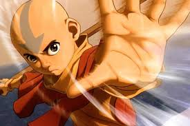
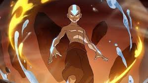

|  |
 |
El agua control, es un antiguo arte de las tribus del norte y del sur, su primera maestra fue la Luna, al ver como dominaba las mareas, aprendieron observándola cada noche. El arte marcial que rige al agua control es el Tai Chi. Existen técnicas derivadas del agua control (Sangre-control, Curación y Planta-Control). | |
| La Tierra-control fue creada por los Tejones-topo, ellos son ciegos y aprenden a sentir la tierra. Para lograr dominar este arte se tiene que estar física y mentalmente inmóvil, como una roca. El arte marcial que rige la tierra control es el Hung Gar. Existen técnicas derivadas de la Tierra-control (Metal-control, lava control y Cristal-control). |
El Fuego-control fue creado por los antiguos Dragones, ellos aprendieron que el fuego no es solo destrucción, si no que es vida que hay que aprender a controlar. El arte marcial que rige al Fuego-control es el Shaolin del Norte. Existen técnicas derivadas del fuego-control (Rayo,combustión y lava control). |  | |
|  Los originales Maestros Aire son los Bisontes-voladores. El Aire-control es cambiante y evasivo. El arte marcial que rige al aire control es el Pa Kua Chang. No se sabe mucho sobre este control, puesto que Aang es el último Maestro Aire. Existen técnicas derivadas del Aire-control (Huracán, Clima, y Vuelo). | |||
 Avatar es notable por presentar una extensa cantidad de mitología y arte asiático para crear un universo ficticio bastante completo. Aparte de los diseños estilo Anime de los personajes, Avatar también tiene una mezcla de filosofía, religión, lenguaje, vestimenta y cultura china, japonesa, coreana, tibetana, india, mongol, e inclusive inuit. Las influencias explícitas incluyen arte e historia china, hinduismo, Taoísmo, Budismo (al igual que el Dalái lama, el Avatar es un maestro con características únicas y que reencarna en otra persona cuando muere, y el maestro de Aang se llama Gyatso, y su hijo -en la secuela- se llama Tenzin, formando ambos el nombre compuesto del actual Dalái Lama, Tenzin Gyatso) y yoga. El personal de producción emplea al consejero cultural, Edwin Zane, para revisar los guiones. El término "avatar" viene de la palabra en sánscrito (Avatāra), que significa "descendiente". En mitología hindú, los dioses se manifiestan en forma humana para restablecer el balance luego de un gran peligro. Los caracteres chinos que aparecen sobre la palabra "Avatar" en la apertura del programa significan: "El medio divino que ha descendido al mundo mortal".